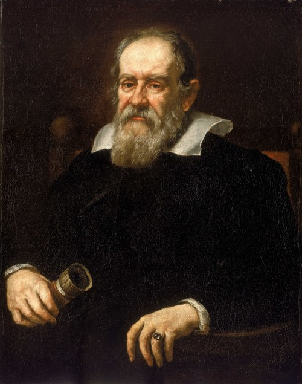

Jupiter is the fifth planet from the Sun, and the largest in the Solar System. It is a gas giant with a mass nearly 2.5 times that of all the other planets in the Solar System combined and slightly less than one-thousandth the mass of the Sun.
Galileo Galilei is credited with the first telescopic observation and detailed study of Jupiter in January 1610, which led to his discovery of its four largest moons.
